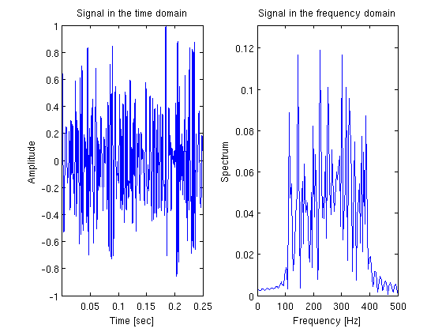
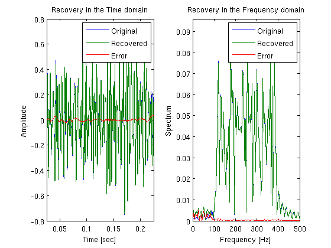
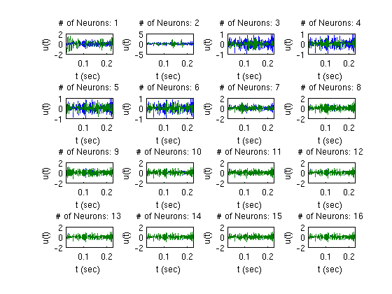
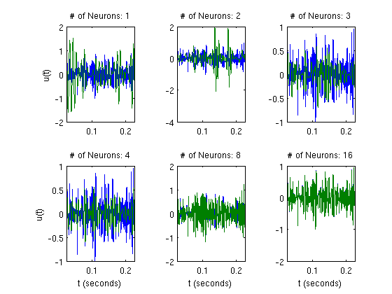
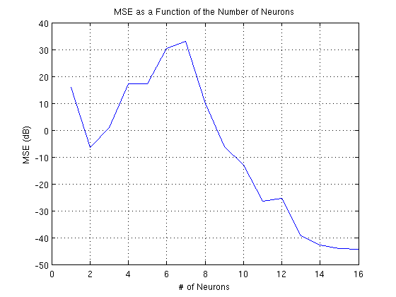
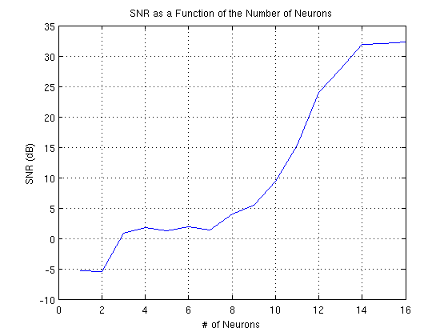

Time Encoding and Decoding of a Bandpass Signal with a Gammatone Filterbank and an Ensemble of Integrate-and-Fire Neurons
This demo illustrates the time encoding and decoding of a bandpass signal using a bank of gammatone filters and an ensemble of integrate-and-fire neurons.
Contents
Generating a Bandpass Test Signal
dur = 0.25; % duration Fs = 1000; % sampling rate of filters dt_f = 1/Fs; t_f = dt_f:dt_f:dur; % time support of filters Ns = 2^9; % oversampling for neural integration dt = dt_f/Ns; % resolution Ft = 1/dt; t = dt:dt:dur; tr_vc = round(0.1*length(t)):round(0.9*length(t)); % interval of interest fmin = 110; % minimum frequency of bandpass signal fmax = 390; % maximum frequency of bandpass signal W = 2*pi*fmax; mc = floor(floor(t(end)/dt)*(fmax-fmin-1)*dt); % maximum sinusoidal components rand('twister',0); randn('state',0); u = gen_test_bp_signal(t(end)+(2*round(0.15*length(t))+1)*dt, ... dt,fmin,fmax,-Inf,mc); % truncate first and last values of the signal to eliminate discontinuities u = u((round(0.15*length(t))+1):end-round(0.15*length(t))-1); u = u/max(abs(u)); % normalize signal
Plot the signal in the time and frequency domains:
figure;subplot(1,2,1);plot(t,u); xlim([min(t) max(t)]); xlabel('t (seconds)'); ylabel('u(t)'); title('Signal in the Time Domain'); np2 = 2^nextpow2(length(u(tr_vc))); U = fft(u(tr_vc),np2)/length(u(tr_vc)); f = Ft/2*linspace(0,1,np2/2+1); subplot(1,2,2);plot(f,2*abs(U(1:np2/2+1))); axis([0,Fs/2,0,1.1*max(2*abs(U(1:np2/2+1)))]); xlabel('f (Hz)'); ylabel('U(f)'); title('Signal in the Frequency Domain');
Filterbank Construction and Filtering of Signal
Nf = 16; % # of filters / neurons flen = ceil(.03/dt); % length of filters [h,fc,tg,fg] = gammatone(Nf,flen,fmin,fmax,Ft,0); ty = 0:dt:dt*(length(u)+flen-2); % extended time vector for dendritic outputs fy = (0:length(ty)-1)*Ft/length(ty); y = zeros(Nf,length(u)+flen-1); for i=1:Nf, y(i,:) = fftconv(u,h(i,:)); end
Time Encoding
Choose parameters (a larger bias is needed for a wider frequency range):
b = logspace(log10(1.3),log10(2.5),Nf); % 1.3 + rand(1,Nf); d = 1 + rand(1,Nf); kd=0.01*ones(1,Nf); for i = 1:Nf tk = [dt,cumsum(iaf_encode(y(i,:), dt, b(i), d(i), Inf, kd(i)))]; TK(1:length(tk),i) = tk'; LN(i)=length(tk); end ln = LN-1; ln2 = cumsum([0,ln]);
Compute the t-transform:
for i = 1:Nf tk = TK(1:LN(i),i)'; q = kd(i)*d(i)-b(i)*diff(tk); q_v(ln2(i)+1:ln2(i+1),1)= q; end
Compute the G matrix:
t2 = -ty(end):dt:ty(end); g2 = W/pi*sinc(W/pi*t2); G = zeros(ln2(end),ln2(end)); for i = 1:Nf ti = round(TK(1:LN(i),i)'/dt); for j = 1:Nf tj = round(TK(1:LN(j),j)'/dt); hht = fftconv(h(i,:),h(j,end:-1:1)); hhtg = fftconv(g2,hht); for k=1:ln(i) for l=1:ln(j) G(ln2(i)+k,ln2(j)+l) = ... dt*trapz(hhtg(length(u)+2*flen+(ti(k):ti(k+1))-tj(l))); end end end end
Compute the reconstruction coefficients:
ck_v = pinv(G)*q_v;
Time Decoding
Compute reconstruction (decoding) filters:
th = (-ty(end)-dt*(flen-1)):dt:ty(end); hg = zeros(Nf,length(th)); for i=1:size(h,1) hg(i,:) = fftconv(g2,fliplr(h(i,:))); end
Reconstruct signal:
u_rec = zeros(size(u)); for j = 1:Nf tj = round(TK(1:LN(j),j)'/dt); for sp = 1:ln(j) idx = length(u)+2*flen-2-tj(sp) + (1:length(u)); u_rec = u_rec + ck_v(ln2(j)+sp)*hg(j,idx); end end u_rec = u_rec - mean(u_rec(tr_vc));
Plot recovered signal in the time and frequency domains:
figure;subplot(1,2,1); plot(t(tr_vc),u(tr_vc),t(tr_vc),u_rec(tr_vc),t(tr_vc),u(tr_vc)-u_rec(tr_vc)); xlim([min(t(tr_vc)) max(t(tr_vc))]); xlabel('t (seconds)'); ylabel('u(t)'); title('Recovery in the Time domain'); legend('original','recovered','error'); U_rec = fft(u_rec(tr_vc),np2)/length(u(tr_vc)); f = Ft/2*linspace(0,1,np2/2+1); subplot(1,2,2); plot(f,2*abs(U(1:np2/2+1)),f,2*abs(U_rec(1:np2/2+1)), ... f,abs(2*abs(U(1:np2/2+1))-2*abs(U_rec(1:np2/2+1)))); axis([0,Fs/2,0,1.1*max(2*abs(U_rec(1:np2/2+1)))]); xlabel('f (Hz)'); ylabel('U(f)'); title('Recovery in the Frequency domain'); legend('original','recovered','error')
Perform sequential recovery:
ur_s=zeros(Nf,length(u)); trsvd = logspace(-3,-8,Nf); % truncate svd for i=1:Nf Gi=G(1:ln2(i+1),1:ln2(i+1)); ck_i = pinv(Gi,trsvd(i))*q_v(1:ln2(i+1)); for j=1:i tj = round(TK(1:LN(j),j)'/dt); for sp = 1:ln(j) idx = length(u)+2*flen-2-tj(sp) + (1:length(u)); ur_s(i,:) = ur_s(i,:) + ck_i(ln2(j)+sp)*hg(j,idx); end end ur_s(i,:) = ur_s(i,:) - mean(ur_s(i,tr_vc)); end
Plot all 16 recovered signals; the original signal is blue, and the recovered signal is green:
figure; for i=1:Nf subplot(4,ceil(Nf/4),i);plot(t(tr_vc),u(tr_vc),t(tr_vc),ur_s(i,tr_vc)) xlim([min(t(tr_vc)) max(t(tr_vc))]); xlabel('t (sec)'); ylabel('u(t)'); title(sprintf('# of Neurons: %d',i)); end
Plot signals recovered using 1, 2, 3, 4, 8 and 16 neurons:
figure; subplot(2,3,1);plot(t(tr_vc),u(tr_vc),t(tr_vc),ur_s(1,tr_vc)); xlim([min(t(tr_vc)) max(t(tr_vc))]); title('# of Neurons: 1'); ylabel('u(t)'); subplot(2,3,2);plot(t(tr_vc),u(tr_vc),t(tr_vc),ur_s(2,tr_vc)); xlim([min(t(tr_vc)) max(t(tr_vc))]); title('# of Neurons: 2'); subplot(2,3,3);plot(t(tr_vc),u(tr_vc),t(tr_vc),ur_s(3,tr_vc)); xlim([min(t(tr_vc)) max(t(tr_vc))]); title('# of Neurons: 3'); subplot(2,3,4);plot(t(tr_vc),u(tr_vc),t(tr_vc),ur_s(4,tr_vc)); xlim([min(t(tr_vc)) max(t(tr_vc))]); xlabel('t (seconds)'); title('# of Neurons: 4'); ylabel('u(t)'); subplot(2,3,5);plot(t(tr_vc),u(tr_vc),t(tr_vc),ur_s(8,tr_vc)); xlim([min(t(tr_vc)) max(t(tr_vc))]); xlabel('t (seconds)'); title('# of Neurons: 8'); subplot(2,3,6);plot(t(tr_vc),u(tr_vc),t(tr_vc),ur_s(16,tr_vc)); xlim([min(t(tr_vc)) max(t(tr_vc))]); xlabel('t (seconds)'); title('# of Neurons: 16');
Compute and plot the MSE and SNR:
for i=1:Nf ms=u(tr_vc)-ur_s(i,tr_vc); mse(i)=10*log10(mean(ms.^2)); snr(i)=10*log10(sum(u(tr_vc).^2)/sum(ms.^2)); end figure; plot(1:Nf,mse); grid on; xlabel('# of Neurons'); ylabel('MSE (dB)'); title('MSE as a Function of the Number of Neurons'); figure; plot(1:Nf,snr); grid on; xlabel('# of Neurons'); ylabel('SNR (dB)'); title('SNR as a Function of the Number of Neurons'); 
Authors: Eftychios A. Pnevmatikakis and Robert J. Turetsky
Copyright 2009-2011 Eftychios A. Pnevmatikakis and Robert J. Turetsky